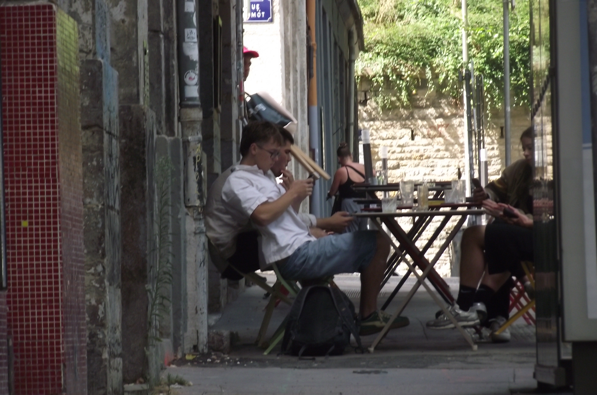
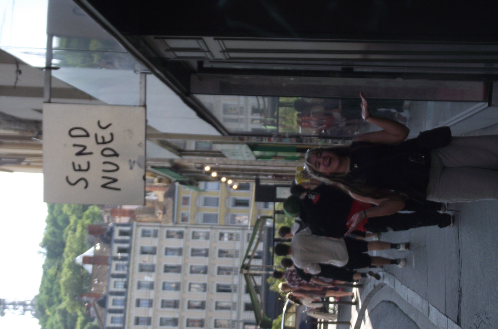
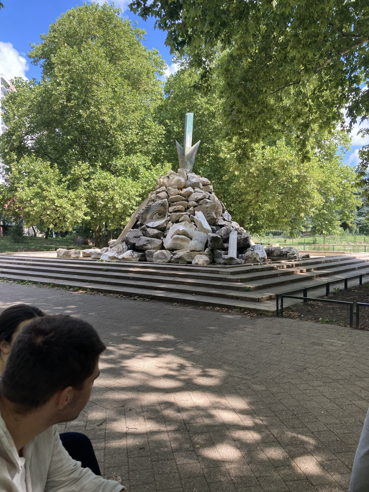
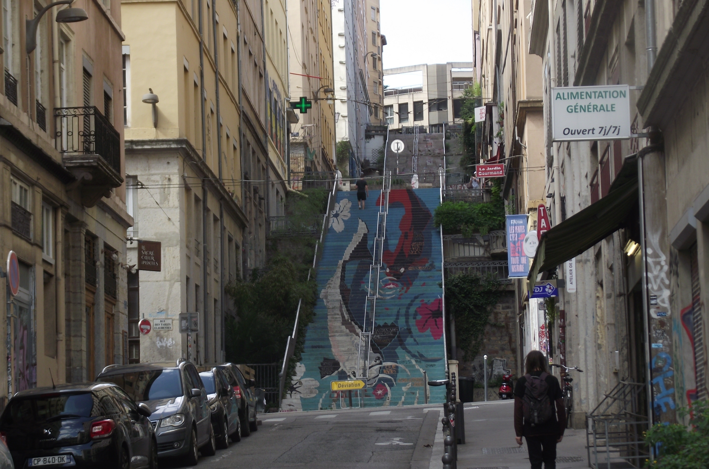
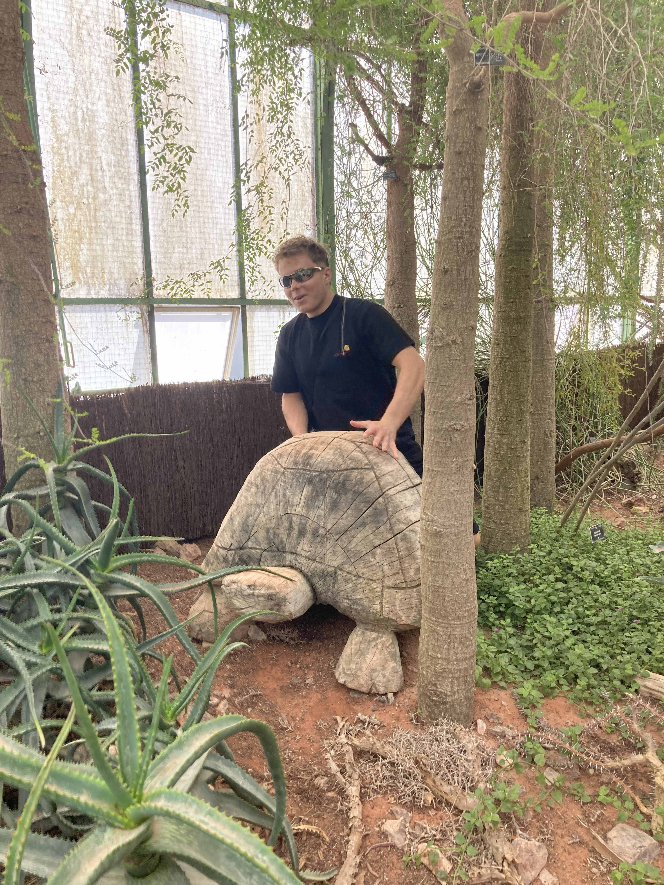
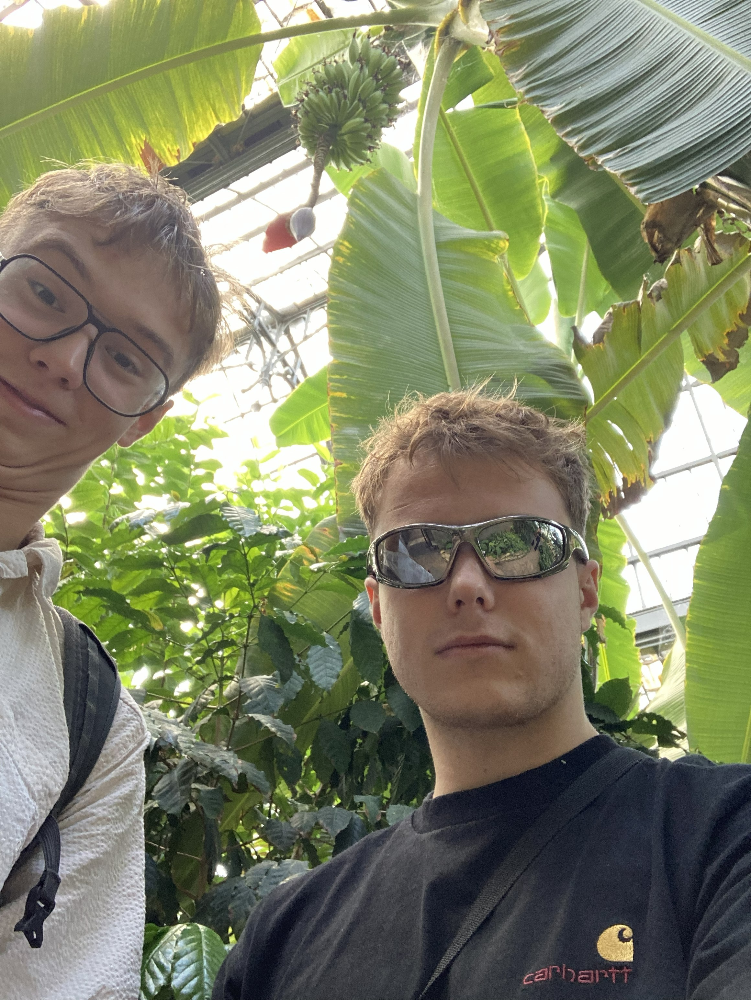
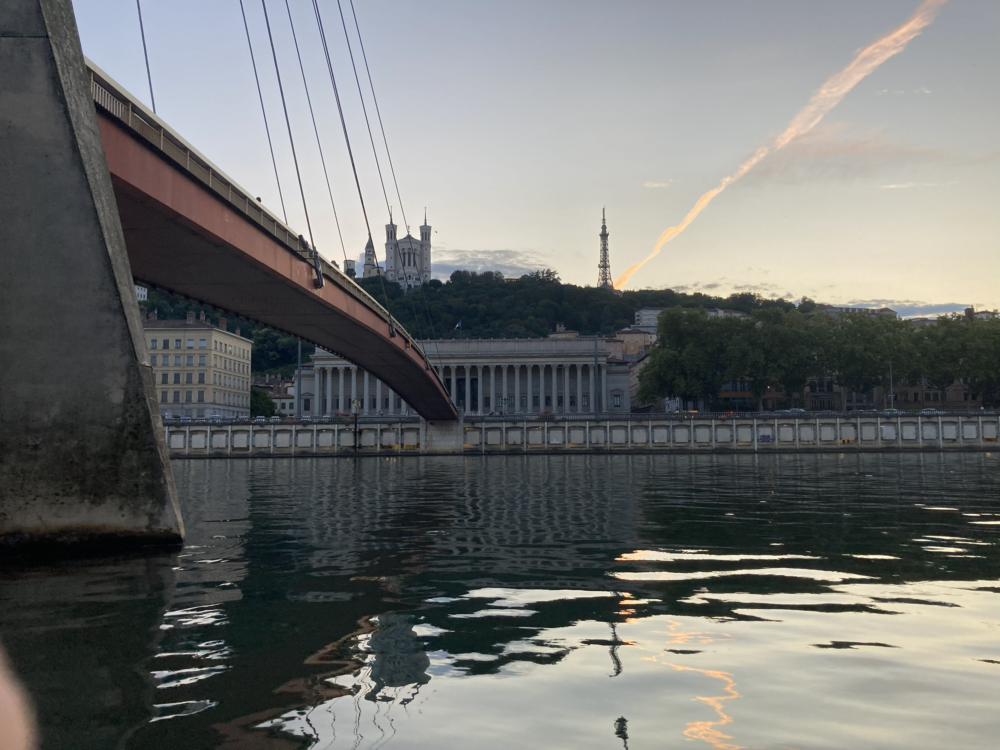

Rolling to Lisbon
Breaking hearts friendships and travel PRs
Creating 12 day journey plan is not an easy task. Get all the recipes and invoices, find place to stay, find connections, find activities, choose people and mind
everyones personal needs while planning. I juggled with most of the tasks, it won't be the most comfortable but as I say travelling shouldn't be anywhere near the comfort. This is the positive thing about
being in charge. You choose the pace, then you just need to push others to march as fast as you.
It's 28 July 5 o ' clock in the morning and we are meeting at train station in Bratislava. Todays goal is to reach Lyon at a reasonable time. The journey will be 14 hours and 4 train changes. In the first train
we found a way to cut that time for about 2 hours and pay 40€ less by changing trains. Between the blocks of sleep, thinking about things we forgot and Rick and Morty marathon the anxious gremlin in my mind was checking platforms from where the trains leave,
delays and all picturing all the things that could go wrong. The engineering went well, after 12 hours we get to Lyon, buy groceries for breakfast and chill. Wait! No! No chill! We are in fucking Lyon! I am
trying to find open café or restaurant otherwise we will die from hunger and my soul will die from lack of cultural experience. With my ear-breaking French I am trying to ask local where we can eat just to get
to know that every on level restaurant is closed and only thing left for us are fastfoods. After little circle in the city we end up in Indian - French something selling pullet, rice and sodas. Still to this day I
believe it was a sin to buy dinner there (my heart still breaks thinking of that one full bar selling only beverages) but it was cheap, the chicken was tasty and the portion was grand. Then we open a beer and
wine and watching a movie we slowly get to sleep mood.
10 minutes before I go to sleep I see my now former best friend going for a cigarette. I went out to balcony to talk to him. There were a few problems before the journey, I had nasty argument with his girlfriend who was travelling with us
and fucked up one friendship with his good good friend. Going to sit on the balcony I ask him: "Got a minute?" He puts out half smoked cigarette and turns away saing he is going to sleep. Ouch, I remember sitting
there for 10 minutes trying to find solid ground after this nonchalant fuck you. From this day there were only problems with this sweet couple and for others tactical battle of choosing sides.




Me and Michal we woke up earlier than others with a quest of buying fresh bread, croissants and pan au chocolat. We came back to feed our comrades, Filip made best scrambled eggs i ever had and let's go
for a walk through the city. When I say walk I mean waaalk. Most of the people dont walk that many kilometers in a day when they are touring in mountains. I made the plan and I took the consequences of the
never ending threat of bitching about stairs...
Our first stop was Botanical garden, botanical gardens are one of the best things you can visit in France, they are big you can go inside the greenhouses and they are free! zumba
classes people all around you having pikniquiks.
After a circle around the lake and listening to the open air piano we stroll further. The croissants which I took as backup plan are already eaten and time of the lunch is coming. Our next stop is vieux Lyon. I
don't know where everywhere we went from bookstores to wonderful sightseeing places but somehow we ended up in a cocktail bar. I trying my half broken french again to order us cocktail instead of lunch we should
be having get us round of cocktails and on top of the part of the Lyon we plan our next steps. Trabpuletes, Notre Damme... wait isn't Notre Damme in Paris? Dissapointed gremlin in my head sadly understood that every
church in France is called Notre Damme.
We start walking, slowly very slowly after refreshing mango-orange-passionfruit potion legs feel little lighter but bitching about the stairs is neverending story. First traboulette and then we get to very
pretty street with a lot of restaurant. Exploring and translating menu posters in front of the restaurants hunger in me only grows and with it grows my understanding of apetite and Frenchies.
There are 3 course menus my eyes blinked and I am trying to drag the whole group to the every restaurant translating the names of the meals a little more atractive and with passion of the salesman.
Somehow they managed to cut me off. We visit second hand where I buy my favourite pair of jeans and continue to Notre Damme. It's on the hill, but no one is bitching now I don't know why but when the matter
is chuch with fancy name everybody's legs turn to wheels and they go and go. I think there was mass at the time but the place looked nice. Right on the other side was restaurant but prices pff, we uderstood
that we are trying to save a little and place for us is on the bottom side of the hill.
Grand probleme where to eat. NOW everzone's hungry and we need to get food soon as possible. I make the racional decision totally not affected by french menus and split the group. It's only me and Filip left
others went for a burger, fries or something like that. Now the economy starts, we are trying to choose, we're walking down the city centre comparing the meals and prices. There were like 20 restaurants and every
one had 20 different meals. I let Filip choose. Honestly I didn't like it, plastic red chairs, it looked more like goofy 2am bar than a restaurant but whatever the menu is in french and they have Lzon's specialite.
We choosed different strategies. Filip ordered things he heard about he played it safely. On the other hand I didn't even know what I was ordering I choose the most atractive items from the list and prepared for
adventure.


Entree
The first course came, Filips tasty and great smelling onion soup. The piece he had given me to taste it was like a piece of heaven. Me it wasn't so good looking it looked like pieces of ham with mayonease and salad, after few bites I realized there was hair in the plate. I tried to put it out but after wairess stopped me trying in sign language to tell me that it is pigs nose and hair is totally normal I finished the entree with Filip laughting at me what I ordered.
Plat principal
Filip plyed it safe and ordered steak and potatoes, me, I ordered Lyons speciealite, tripe saussage with tasty sauce and two potatoes. This time when we understood what I have on my plate we bursted out with laughter. Saucisson de Lyon, I want to eat it again and next time with glass of fine whine.dessert
Now I had enough of surprises so I played it safe with Filip and we ordered creme brulle.Although description of my food can sound a little bit disgusting I enjoyed every piece of it. This was something I was longing for and this rollercoster of tastes made me genuinely content. The course dinner take it's time. Others already done at the edge of the Rhone. Buy bottle of wine sit on the stone border of the flume and enjoy the sunset that is the most wonderful thing you can do in Lyon Pink skies, Notre Damme, vieux Lyon in the background and warm wind relaxing until there was more lights from the lamps than sky itself. We decided to walk back to the apartment to get a feel of Lyon the last time. Tomorrow morning we are departing to Madrid and when we come back we will fall to sleep in an instant.

Catch it (not)
Pack earlz, even earlier is departure of our train. In order to et some fresh air, I decided to take a walk to train station. In maps found a small bakery
and enjoyed last planned French croissant of the journey. I get to the car with other pirates of this ship and we started planning what to do next because
we do not have mandatory seat reservations for the train in Spain are we can not buy them online or in France. Total madness. On the way we met pair of other travelers
with the same problem, they believe that they will buy tickets on board. We convert to this alternative religion and pray to spanish train god to let us reach
Madrid today. Train stops in the station and we are running from door to door being pushed by conductors to find leader of the train and ask him. Spanish train
god heard our prayer but only halfway, we buy train reservations for 30€ each although only to Barcelona but we will be in Spain and buy next tickets there.
One person in our group missed the stairs that day so they had to start bitching to the conductor why we can't go all the way to the Madrid. The conuctor is
my spiritual animal from that day, being bombarded for half an hour by sentences which contained at least two why's I would kick the person, no the whole group out of
the train but he just ignored it, gracefully.
After persuading others to not travel without tickets we get off in Barcelona. Straight to the Renfe clerks to buy tickets. Okay first we stood in queue for half an
hour and then they told us that the next train we can buy tickets for is in 5 hours. Fuck me in the ass. We did not have any other option. Morale and mood after this
change in plans was really bad. We did not want to go anywhere so we just stayed at brunch place where we got our lunch using two spanish words and professional sign
language, then visited supermarket to get something to eat because this day will be looooong.
After 5 hour power play we got back to train. In Madrid we've got first metro to our apartment put our stuff down and fast as we could went to the restaurant because it
was already after 10pm. Only place opened in center was restaurant in which Napoleon had his dinner 200 years ago. But they served fruit di mere. Curiosity led me to try
mussles and carrot cake Filip offered me afterwards. It wasn't a lot but it was the first time I had fruit di mere so unforgetable moment.
After some crusing around the empty night Madrid we get back to our place and die in an instant.
Now we are only half a day from Lisbon. Reffil the supplies and lets roll the train wheels. Portugal has totally different politics in trains, they have no
website, so the tickets must be bought in the kiosk and we are hoping the Barcelona incident won't repeat. I got instructions that is cheaper and more reliable
to get flixbus instead of train but we have trains for free so it's the only option and gamble our chances to not spend 10 euros sounds like a good deal.
Our prayers came true and we get on time on every train. Changes breaks were used for understanding how to get a train ticket or getting a kebab. It probably
wasn't the best deal, the empty place probably meaned something, there was probably too much yogurt or something in it for the 35 degrees that was outside, but getting kebab on Spanish-Portugese
borders, Filip and me, we take the risk. The thing that persuaded us to buy the meal was look of the guy in the shop, while trying to pantomime what we wanted,
we saw the best turkish moustache till then. Someday I need to come back and ask for the recipe how to get the moustache of the turkish kebab god.
Borders train was horrible. Stacked head on head, motor instead of electricity, no climatization, we were dying, as if it is wasn't enough I needed to shit.
WC was close the doors, enjoy the darkness and smell. It was even hotter on the WC. I came back sweating up and praying for the normal train. Badajoz-Entroncamento
train, we felt like illegal imigrants but now we were only hour from the Lisbon. Summer sea breeze, end of the railroad in wonerful Lisbon oriente and now we try to understand how to use metro and bus.
Easy on the way to the apartment we get the food, I check out the roof and romanticize about drinking red wine during the sunset there and enjoy our new little neighbourhood.
In the evening we were meant to meet Anna, my potentional future wife.
We've been texting about a month, since erasmus in Lecce. I wasn't really into it, but hoped that her presence will prove me wrong. What is more, we needed guide in the Lisbon.
She was flirting with me from the second we've met, at least I think. I quickly introducet her to my friends and they took care of her the whole night. We got tour of the night
Lisbon ate in the finest seamonster restaurant and then half of the group decided to back up to apartment. I stayed in the city with Emma and Anna, she took us to the greatest
views in the city, then to repay her we took her home. I was thinking if a fistbumping her on the metro will make her understand the lack of mz interest but she was a warrior
although Emma, who saw the love somwhere, killed it with> Zou two are so cute that I will puke.
The only thing I was horny for now was tomorrow surfing lesson, party and pastel de nada. Fall asleep fast, tomorrow is going to be day of our lifes.